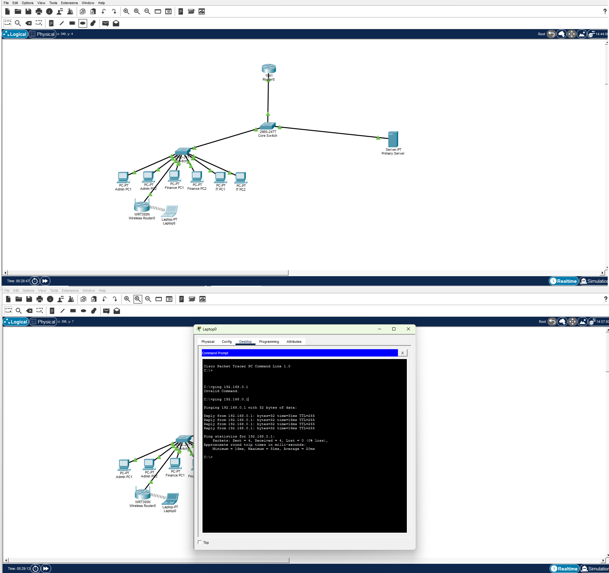

Project Overview
Assisted in setting up and optimizing wireless connectivity for users to improve internet access, coverage, and network reliability. The work covered deploying secure wireless networks and the switching behind them :including trunk links that carry wireless VLAN traffic between switches and access points so each SSID reaches the right network segment.
Good Wi‑Fi is more than signal strength; it is also about how wireless traffic is carried, separated, and delivered once it lands on the wired network.
Key Responsibilities
- Deployed and configured secure wireless networks in Cisco Packet Tracer.
- Configured and verified trunk links on a Cisco switch using the Cisco IOS CLI.
- Mapped wireless SSIDs to VLANs carried across trunk ports.
- Optimized wireless coverage, channel use, and signal reliability.
- Tested client connectivity and roaming behaviour.
- Documented wireless and trunk configuration for support.
Systems & Components Deployed
- Secure Wireless Networks (Packet Tracer)
- SSID-to-VLAN Mapping
- 802.1Q Trunk Links
- Wireless Access Configuration
- Coverage & Channel Optimization
- Wireless Configuration Documentation
Tools & Technologies Used
Deployment & Optimization Activities
- Configuring secure wireless networks and SSIDs
- Setting up trunk ports to carry multiple wireless VLANs
- Verifying allowed VLANs and trunk status via show commands
- Tuning coverage and channels for reliable connectivity
- Testing client association and end-to-end access
- Recording configuration for ongoing support
Impact & Outcomes
- Improved wireless coverage, access, and reliability for users.
- Secure separation of wireless traffic through VLANs and trunks.
- Stable connectivity with correctly carried SSID traffic.
- Documented wireless setup that simplified future changes.
Project Evidence


Skills Demonstrated
- Wireless Network Deployment
- 802.1Q Trunk Configuration
- SSID & VLAN Mapping
- Cisco IOS CLI
- Coverage & Channel Optimization
- Wireless Troubleshooting & Testing
Project Outcome
This project strengthened practical experience in deploying and optimizing wireless networks, including the trunking that carries wireless traffic across the wired core. It also enhanced the ability to deliver secure, reliable Wi‑Fi that performs well for users while keeping traffic properly segmented and documented.